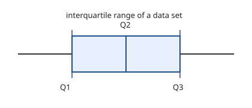

<script src="/assets/redirect.js"></script>
<section class="theory" data-section="S1-3.2">
<h2>3.2 The interquartile range and percentiles</h2>
<p class="src">Based on Cambridge International AS &amp; A Level Mathematics: Probability &amp; Statistics 1 Coursebook, Chapter 3, printed pp.56–64 (the interquartile range and percentiles of a data set). Printed pages were read from S1.pdf (printed 56–64 = PDF 68–76). Own wording and new numbers.</p>
<p class="key-words"><strong>Key words:</strong> <em>interquartile range of a data set</em>, <em>lower quartile of a data set</em>, <em>upper quartile of a data set</em>, <em>percentile of a data set</em></p>
<p>The <strong>lower quartile of a data set</strong> \(Q_1\), the median \(Q_2\) and the <strong>upper quartile of a data set</strong> \(Q_3\) divide an ordered list into four parts of equal size. The <strong>interquartile range of a data set</strong> is \(Q_3-Q_1\), the range of the middle half of the values. It is less sensitive to outliers than the range of a data set.</p>
<figure>

<figcaption>The interquartile range of a data set is \(Q_3-Q_1\).</figcaption>
</figure>
<p>A <strong>percentile of a data set</strong> is the value that is that percentage of the way through the ordered list. In particular, \(Q_1\), \(Q_2\) and \(Q_3\) are the 25th, 50th and 75th percentiles of a data set. For grouped data with total frequency \(n\), these positions are used to read or interpolate from a cumulative frequency table or graph.</p>
<div class="worked-example"><h4>Worked example 1</h4>
<p class="src">Book: ungrouped data, printed pp.56–64. New numbers.</p>
<p>The ordered list 2, 4, 6, 8, 10, 12, 14 has seven values. The lower half is 2, 4, 6 and the upper half is 10, 12, 14. Find the interquartile range of this data set.</p>
<ol class="steps">
<li>\(Q_1=4\) and \(Q_3=12\), so the interquartile range of a data set is \(12-4=8\). <span class="mark">A1</span></li>
</ol></div>
<div class="worked-example"><h4>Worked example 2</h4>
<p class="src">Book: an even list, printed pp.56–64. New numbers with an integer IQR.</p>
<p>The ordered list 1, 3, 5, 7, 9, 11, 13, 15 has eight values. The lower half is 1, 3, 5, 7 and the upper half is 9, 11, 13, 15. Find the interquartile range of this data set.</p>
<ol class="steps">
<li>\(Q_1=\dfrac{3+5}{2}=4\) and \(Q_3=\dfrac{11+13}{2}=12\), so the interquartile range of a data set is \(8\). <span class="mark">A1</span></li>
</ol></div>
<h3>Common mistakes</h3><ul>
<li>Forgetting to put the observations in order before locating the quartiles.</li>
<li>Using \(n/4\) positions inconsistently on a grouped table, or reading the class mid-value as if it were already the quartile.</li>
</ul>
<div class="quick-check" data-q="QC1">
<h4>Quick check 1</h4>
<p>The ordered list 2, 4, 6, 8, 10, 12, 14 is given. What is the interquartile range of this data set?</p>
<details>
<summary>Show answer</summary>
<ol class="steps">
<li>\(Q_1=4\), \(Q_3=12\), so the interquartile range of a data set is \(8\). <span class="mark">A1</span></li>
</ol>
<p class="final">\(8\)</p>
</details>
</div>
<div class="quick-check" data-q="QC2">
<h4>Quick check 2</h4>
<p>The ordered list 1, 3, 5, 7, 9, 11, 13, 15 is given. What is the interquartile range of this data set?</p>
<details>
<summary>Show answer</summary>
<ol class="steps">
<li>\(Q_1=4\), \(Q_3=12\), so the interquartile range of a data set is \(8\). <span class="mark">A1</span></li>
</ol>
<p class="final">\(8\)</p>
</details>
</div>
<div class="quick-check" data-q="QC3">
<h4>Quick check 3</h4>
<p>An ordered data set has lower quartile 10 and upper quartile 22. What is the interquartile range of this data set?</p>
<details>
<summary>Show answer</summary>
<ol class="steps">
<li>The interquartile range of a data set is \(22-10=12\). <span class="mark">A1</span></li>
</ol>
<p class="final">\(12\)</p>
</details>
</div>
<h3>Past paper</h3>
<p class="src">9709/61/M/J/14 Question 7(iii) only, 3 marks, together with the opening table of the question so that the part is self-contained. Parts (i) (histogram) and (ii) (mean) are omitted.</p>
<p>A typing test is taken by 111 people. The numbers of typing errors they make in the test are summarised in the table below.</p>
<p>Number of typing errors: 1–5, 6–20, 21–35, 36–60, 61–80. Frequency: 24, 9, 21, 15, 42.</p>
<p>(iii) State which class contains the lower quartile and which class contains the upper quartile. Hence find the least possible value of the interquartile range. [3]</p>
<details><summary>Show official scheme</summary>
<ol class="steps">
<li>Lower quartile in 6–20. Official MS: B1. <span class="mark">B1</span></li>
<li>Upper quartile in 61–80. Official MS: B1. <span class="mark">B1</span></li>
<li>Least value of the interquartile range is \(61-20=41\). Official MS: B1, follow through any or both wrong quartile classes if sensible. <span class="mark">B1</span></li>
</ol></details>
</section>
